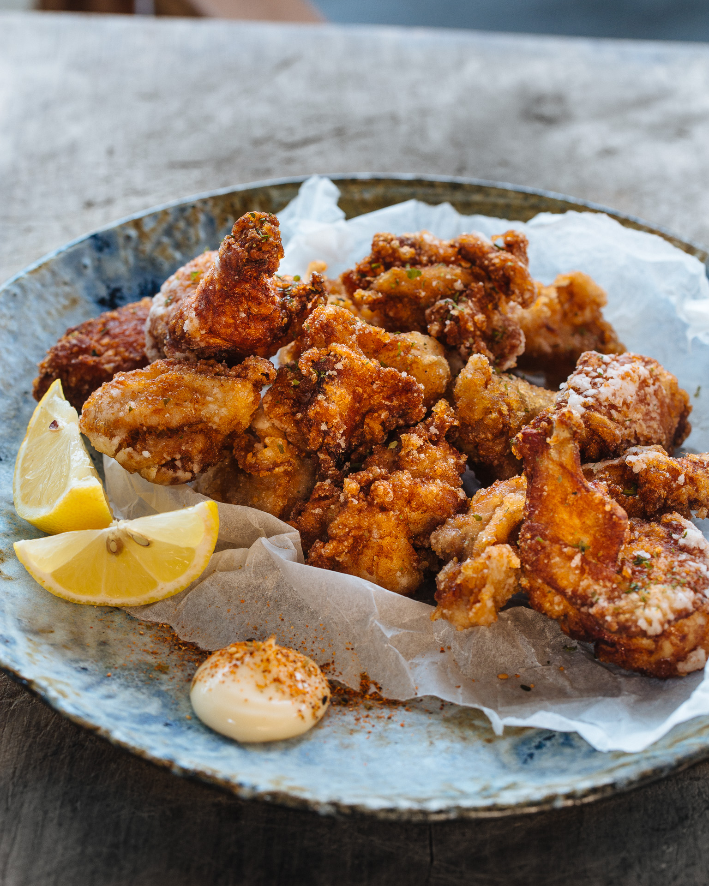

Karaage

Description
A triple fried Karaage recipe from Adam Liaw.
This recipe aims to create a crispy exterior and juicy interior by quickly frying chicken thrice in high heat.
Ingredients
- 600g chicken thghs
- 3 tbsp light soy sauce
- 2 tbsp sake
- 1 tbsp grated ginger, juice only
- 1/2 tsp sugar
- 3/4 cup potato flour (or substitute cornflour)
- about 2L canola, sunflower or other vegetable oil, for deep frying
- Japanese mayonnaise, to serve
- Lemon slices, to serve
- Shichimi Togarashi (Japenese seven spice), to serve (optional)
Steps
- Cut the chicken into 5cm pieces.
- Combine the chicken with the soy sauce, sake, ginger juice and sugar and stand for 10 minutes.
- Place the flour in a tray or large bowl.
- Pull the chicken out of the marinade with chopsticks and drop it into the flour, one piece at a time.
- Shake any excess flour from the chicken and place in a tray in a single layer.
- Allow the floured chicken to stand, uncovered for at least 5 minutes before frying.
- Heat the oil to 180°C in a wide saucepan.
- Add the chicken to the oil in batches.
- For each batch, deep fry for 1 minute then remove the chicken to a rack and rest for 30 seconds.
- Return the chicken back to the oil and fry for 30 seconds, and then rest on a rack again for 30 seconds.
- Transfer the chicken back into the oil for one last blast of 30 seconds to a minute, and then rest for a two minutes on a wire rack.
- Serve the chicken with a lemon wedge, and a little Japanese mayonnaise scattered with shichimi togarashi (if using).